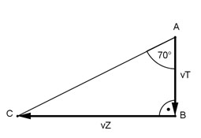

Aufgabe 115 Betrachtet man aus einem fahrenden Zug, der 100 m in 12 Sekunden zurücklegt, Regentropfen, so scheinen die unter einem Winkel von 70° zur Senkrechten zu fallen. Welche Geschwindigkeit vT haben die Tropfen?

100 m vZ = ------- = 8,3 m/s 12 s Im Dreieck CBA: vZ tan 70° = ----- | *vT vT vT * tan 70° = vZ |:tan 70° vZ 8,3 m/s vT = --------- = ----------- = 3 m/s tan 70° 2,7475